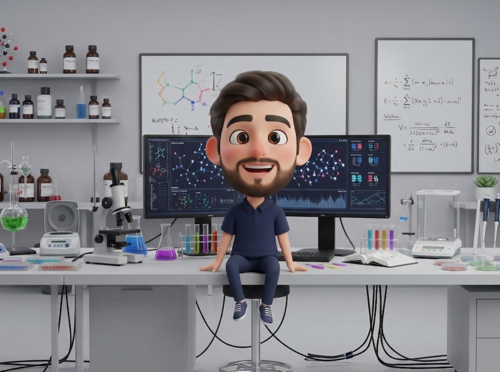

Rayane Achebouche
PhD Student in Bioinformatics — Université Paris Cité
Applying artificial intelligence to study the impact of endocrine disruptors on breast cancer onset and progression. My work combines transcriptomics and high-throughput phenotypic profiling (cell morphological data) to build predictive models of chemical risk.
About
I am a PhD student in Bioinformatics at Université Paris Cité, working on the impact of endocrine disruptors on breast cancer onset and progression using artificial intelligence. My doctoral research integrates transcriptomics and high-throughput phenotypic profiling (cell morphological data) to build predictive models capable of identifying chemical risk factors for breast cancer.
Prior to my PhD, I worked as a Research Engineer at École Polytechnique (Laboratoire d’Optique et Biosciences, 2021–2023), where I developed custom Graph Neural Networks to predict protein-ligand binding affinity and conducted structure-based virtual screening campaigns targeting ThyX inhibitors. I was also awarded the X-Grant prize through the X-Novation entrepreneurial program.
My earlier research at INSERM covered systems biology, network toxicology, olfactory receptor–molecule relationships, and the application of deep learning to multi-target pharmacology.
Publications
Experience
Research Engineer
- Design and training of custom Graph Neural Networks for protein-ligand binding affinity prediction
- Structure-based virtual screening using Smina for the identification of novel ThyX inhibitors
- Laureate of the X-Grant prize — X-Novation entrepreneurship program
Research Engineer
- Collection and processing of data from literature, databases, and experimental studies
- Development of integrative models based on biological networks for prediction purposes
- Collaborative scientific writing
Research Scientist Intern
- Database construction via web-scraping
- Generation and analysis of ML/DL multi-label classification models: RF, MLP, CNN, GCN
- Molecular representations: fingerprints, molecular descriptors, molecular graphs
- Dimensionality reduction and chemical space visualization (UMAP)
Research Scientist Intern
- Systems biology study contributing to a peer-reviewed publication
Skills
Deep Learning
Machine Learning
Cheminformatics
Molecular Modeling
Molecular Dynamics
Data Science & Programming
Education
Contact
Feel free to reach out for research collaborations, questions, or discussions around AI and drug discovery.